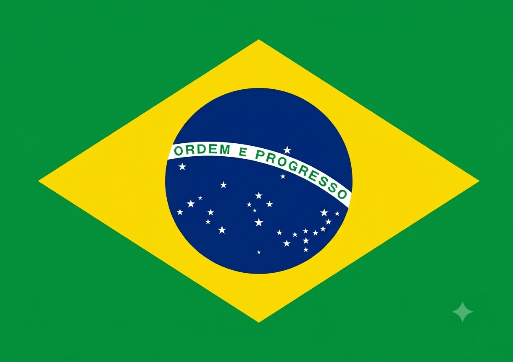

Seleção Brasileira



A Copa do Mundo de 2026 ocorre de 11 de junho a 19 de julho nos Estados Unidos, México e Canadá, com 48 seleções e 104 jogos em 39 dias. A abertura será em 11 de junho no Estádio Azteca (Cidade do México) e a final em 19 de julho no MetLife Stadium (Nova York/Nova Jersey). A disputa do terceiro lugar será em 18 de julho em Miami. Os jogos acontecem em 16 cidades (11 nos EUA, 3 no México e 2 no Canadá). A fase de grupos (12 grupos com 4 times) vai de 11 a 27 de junho. Avançam os dois primeiros de cada grupo e os oito melhores terceiros para a nova fase de 16 avos de final (29 de junho a 3 de julho). O mata-mata segue com oitavas (4 a 7 de julho), quartas (9 a 11 de julho) e semifinais (14 e 15 de julho). As vagas diretas estão divididas entre UEFA (16), CAF (9), AFC (8), CONMEBOL (6), CONCACAF (6, incluindo os três anfitriões) e OFC (1), restando 2 vagas definidas via repescagem.